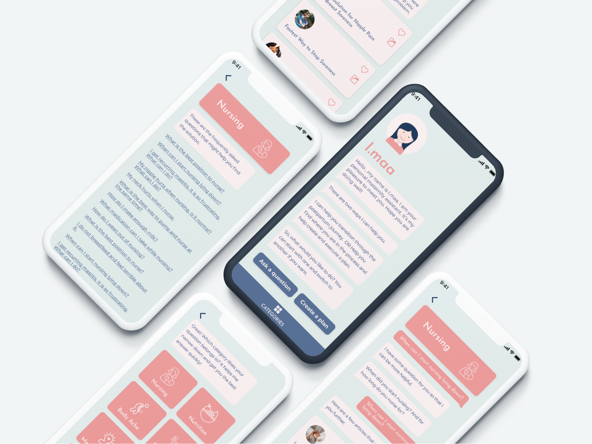

Challenge
The postpartum period – that is, the months after baby
arrives – is a time of tremendous change, responsibility, and
healing. The care new moms receive after giving birth is just as important as their prenatal care.
It is surprising that
new moms get a wealth of information about pregnancy, labor, and birth from their family,
practitioners, and even
strangers, but they hear very little about postpartum issues, let alone how to cope with it. There
is a deep void about
postpartum awareness and there are very few resources that provide information about postpartum
care. While new parents
spend hours browsing through a ton of blogs, forums, Facebook groups, the information they receive
is all scattered.
Often times parents are confused because all the information they find on the internet because it is
often not accurate,
organized and evidence-based.
Goal
A personalized postpartum support program. A new mother
is supported through her recovery process with a personalized
curriculum to help her safely recover from birth and confidently transition into motherhood. A
solution to educate and
empower new moms' to advocate for the individualized care and support they deserve. A solution to
validate their pain
and suffering and create an action plan to improve their situation.
Understanding the Problem
Before diving into designing UI and the overall
experience with the app, I had a detailed kick-off call with the client
to uncover pains felt by the new moms. In this call, I asked many question to the client to
understand the core
functionality of the app. It was important at this stage to understand client’s vision and the user
base (new mothers
who are expecting and/or have delivered a baby) they were targeting. It was revealed that:
-
New moms' feel confused about the information overload out there on the internet and don't really know which sources to trust when they are trying to find the answers to their pain. Often times the information is conflicting and that confuses them and makes them miserable during the tough time of postpartum.
- They often can't have access or can't afford to hire a postpartum doula or breastfeeding consultants to ask about the problems that they are facing as new moms.
- New moms need to have the access to the information that is accurate and can be easily accessible.
Product Vision and Solution
From these findings, I along with my client honed in on
some key insights:
-
We want to create a space where we can provide new moms with empowering resources and can answer their pain points by providing them personalized information based on their particular situation.
- We want to provide them with the information that's most accurate and evidence based, similar to what a postpartum doula or a breastfeeding consultant can provide them.
- We want to make sure that the new moms feel supported by providing them the answers that they are looking for at the tip of their fingers when they need it.
Sketches
As a starting point, I did some market research on
competitors to investigate the current offerings in the market. I
found out that while there is a ton of information about the postpartum journey and motherhood in
general, there is not
a single chatbot that's been targeted particularly to support new moms postpartum.
I then went through a 20 minute sketching session where I drew out some rough early sketches to get
the flow out of my
head and on to the paper.
User Flows
Defining all the
basic elements in advance helped to design fast and consistent throughout the project. Style changes
later on were easy to orchestrate.

Designing with System
Defining all the
basic elements in to components and setting up design system in advance helped to design fast and
consistent throughout the project. Style changes later on were easy to orchestrate.
Final Designs
The client was
very happy with the final design. They are in the process of looking for a developer who can develop
this
this bot and release on iOS.
